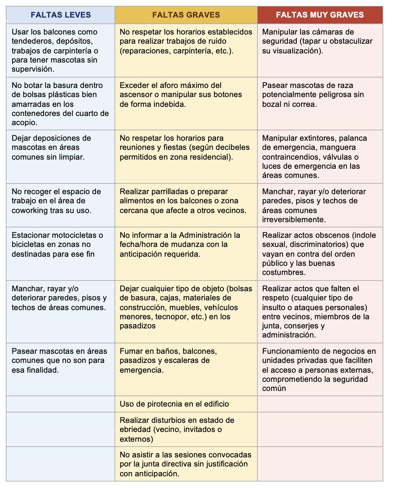

Sanciones
Esta sección reúne el cuadro resumido de sanciones y la referencia visual enviada, a fin de mantener trazabilidad de lo aprobado.
Resumen de penalidades
Texto breve para consulta rápida por parte de los propietarios.
| Tipo de falta | Primera aplicación | Reincidencia | Observación |
|---|---|---|---|
| Leve | Amonestación escrita | S/ 50 y luego S/ 100 | Aplicación con evidencia y comunicación formal. |
| Grave | S/ 50 | S/ 150 | Se recomienda registrar los antecedentes y la reincidencia. |
| Muy grave | S/ 100 | S/ 200 | Debe mantenerse trazabilidad documental. |
Tabla visual aprobada
Se añadió la imagen enviada para conservar referencia directa.

Documento complementario: abrir enlace de sanciones.